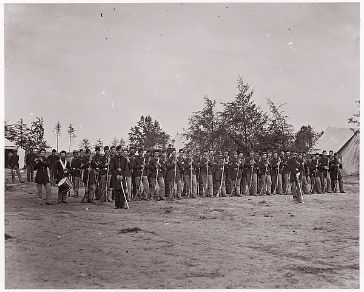

Albumen silver print from glass negative
[Unknown Company, 30th Pennsylvania Infantry]

Medium
Artist
Unknown (American)
The Met record notes a former attribution to Mathew B. Brady.

Albumen silver print from glass negative
Unknown (American)
The Met record notes a former attribution to Mathew B. Brady.